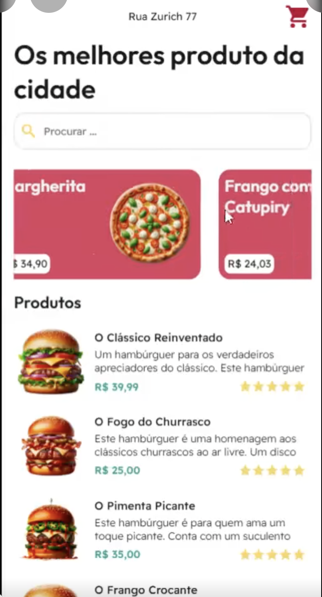

MOBILE / PROTÓTIPO

01 / MOBILE
Uma experiência
de delivery.
Protótipo de aplicativo que reúne um catálogo de produtos em uma interface mobile. Desenvolvido em FlutterFlow, com dados no Supabase e compatibilidade com Android e iOS.